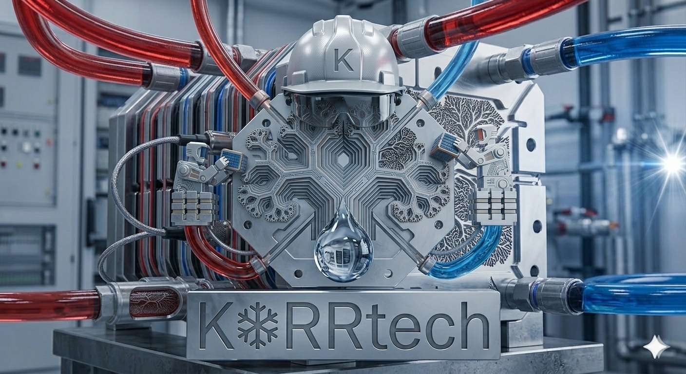

vs Boyd / CoolIT
Their advantage
Scale, reliability, qualification — 5M+ cold plates shipped.
Our edge
Win on extreme cases: 25–40% lower thermal resistance, 10–20 °C hotspot drop, predictive diagnostics.
Self-regulating cooling modules for extreme heat flux.

Conventional cold plates are still mostly passive plumbing. The bottleneck is no longer total wattage — it is local hotspots, transient loads, dry-out, fouling, and flow imbalance. Failures cascade into throttling, shorter lifetime, oversized systems, and expensive downtime.
AI accelerators, lasers, power electronics, and defense systems are pushing past the cold-plate era. Liquid cooling is already adopted — the next layer is intelligence and architecture.
Biology has been balancing flow, exchange, and feedback in tight envelopes for hundreds of millions of years. We translate that logic into manufacturable geometry.

High-intensity laser systems, defense electronics, and advanced power electronics — environments where the cooling module unlocks system performance, and a thermal failure is more expensive than the module itself.
Targets are versus a comparable commercial cold plate at the same envelope. Bars below show the MVP fill; the ember tick marks the strong target.
Scale, reliability, qualification — 5M+ cold plates shipped.
Win on extreme cases: 25–40% lower thermal resistance, 10–20 °C hotspot drop, predictive diagnostics.
State-of-art cold plate: 600 W/cm², 50% higher kW/LPM, 4× lower ΔP.
Compete one layer up: full module with dielectric loop, condenser, sensing, and failure prediction.
Coolant inside silicon — up to 3× better heat removal than cold plates.
No chip redesign. Module-level integration, faster pilots in lasers and advanced electronics.
Waterless two-phase direct-to-chip cooling at data-center scale.
Compact extreme-hotspot module — application-specific, 20–40% smaller envelope.
Facility-level density and water reduction at rack scale.
Drop-in component cooling — localized hotspot removal, minimal retrofit burden.
Bio-inspired thermal-fluid architecture for the systems that hit the wall first — lasers, defense electronics, and the AI infrastructure right behind them.